راهنمای استفاده از
همراه آبفا استان اصفهان
اپلیکیشن اندروید "همراه آبفای استان اصفهان" به سفارش سازمان آب و فاضلاب استان اصفهان جهت سهولت
ارتباط مشترکین و سازمان و کاهش مراجعات حضوری از طریق انجام خدمات به صورت غیرحضوری، برنامه -نویسی
و در فروشگاه های معتبر اندروید منتشرشد.
شما می توانید با مارکت های معتبر اندرویدی ایرانی، در هر زمان نسبت به نصب این برنامه کاربری اقدام
نمایید.
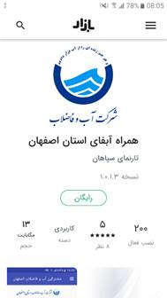
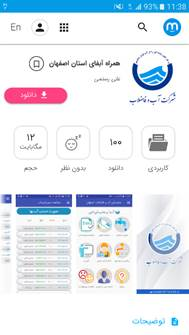
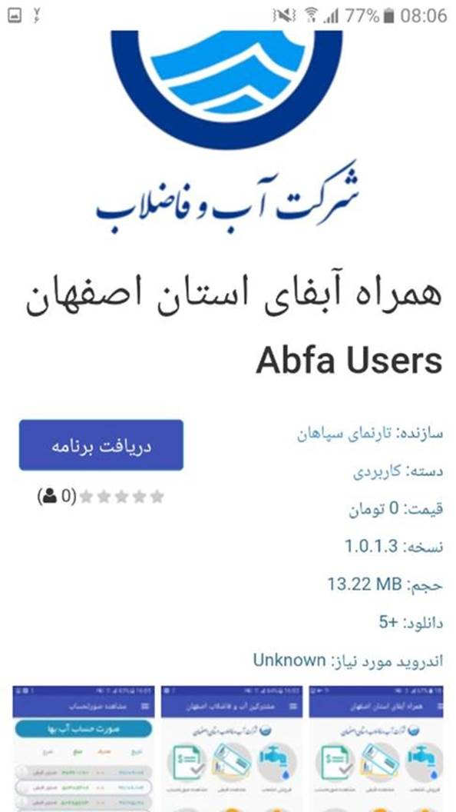
پس از نصب و اجرای برنامه، وارد صفحه اصلی برنامه می شوید که شامل عناوین:
1. آخرین قبض
2. صورتحساب
3. اعلام کارکرد کنتور
4. فروش انشعاب
5. خدمات پس از فروش
6. پیگیری درخواست ها
7. راهنما
8. آموزش
9. انتقادات و پیشنهادات
می باشد که با انتخاب هر کدام وارد صفحه مربوط به آن می شوید.
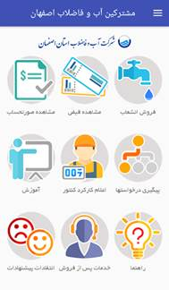
ضمنا در هر قسمت از برنامه که باشید، می توانید با کشیدن انگشت از سمت راست تا وسط صفحه به لیست
فوری (Drawer) دسترسی داشته باشید. که شامل عناوین ذیل است:
1. خانه
2. اتصال به پرتال
3. اطلاعات انشعاب
4. دستگاه های فعال
5. به روز رسانی
6. ثبت/تغییر حساب کاربری
7. بازیابی کد رهگیری
8. ارتباط با آبفا
9. خروج از برنامه
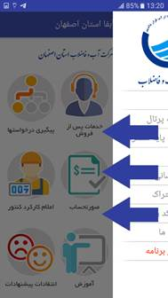
ضمنا در پایین لیست فوری می توانید حالت اپلیکیشن را از / به حالت تیره تغییر دهید.
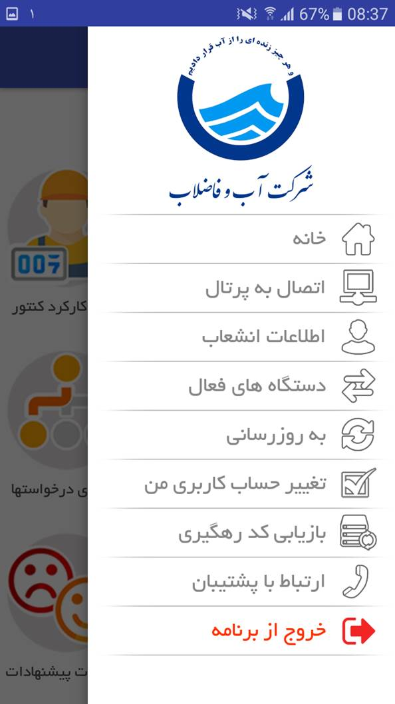
توصیه می شود جهت سهولت کار و دسترسی به همه امکانات با مراجعه به قسمت "ثبت حساب کاربری" از طریق
لیست فوری، مشخصات خود را وارد کنید.
ضمنا شما در هر زمانی می توانید اشتراک خود را تغییر دهید، اشتراک دیگر را اضافه کنید یا از آن خارج
شوید.
پس از ثبت اشتراک پیامک حاوی تاییدیه از طرف آبفای استان دریافت خواهیدکرد.
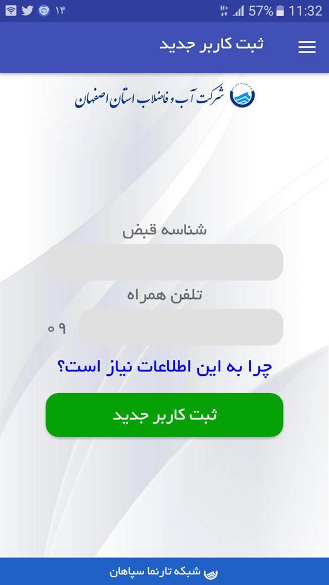
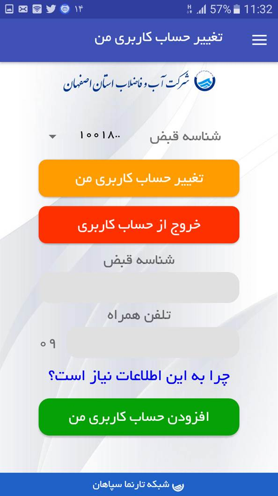
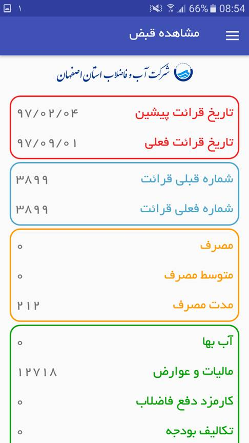
با مراجعه به بخش "آخرین قبض" می توانید اطلاعات مربوط به آخرین قبض خود، اعم از شناسه قبض، شناسه
پرداخت، مهلت و مبلغ قابل پرداخت، شماره فعلی و پیشین و .... را مشاهده کنید.
این امکان برای شما فراهم شده است که در صورت نیاز، آخرین قبض را ذخیره یا اشتراک گذاری
کنید.
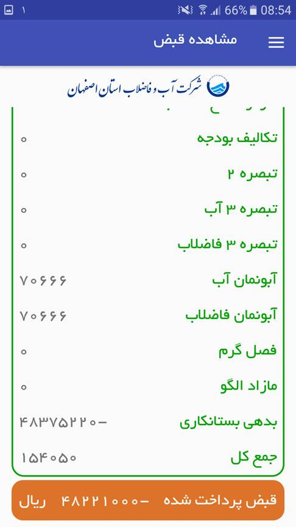
همچنین می توانید با مراجعه به بخش " صورتحساب" ، لیست آخرین قبوض خود و وضعیت آن ها را مشاهده
نمایید.
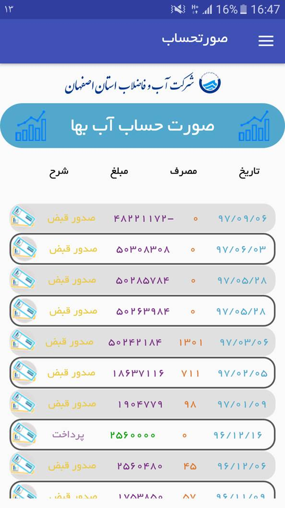
در این قسمت با تپ بر روی "صورت حساب آب بها" می توانید نمودار مصرف اخیر خود را ملاحظه نمایید.
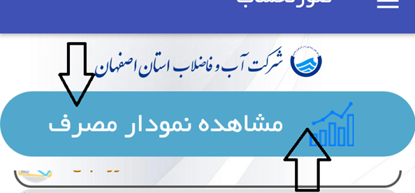
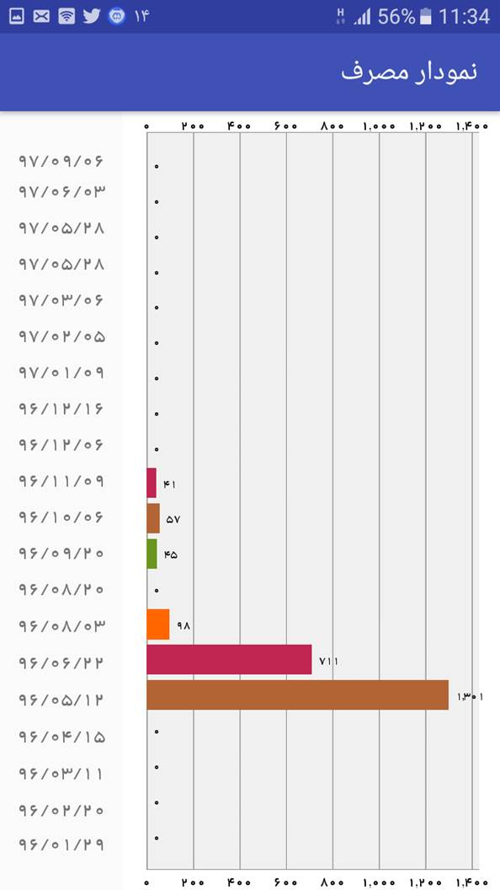
ضمنا با تپ کردن روی هر سطر می توانید جزئیات مربوط به آن سطر را مشاهده نمایید.
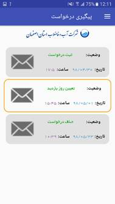
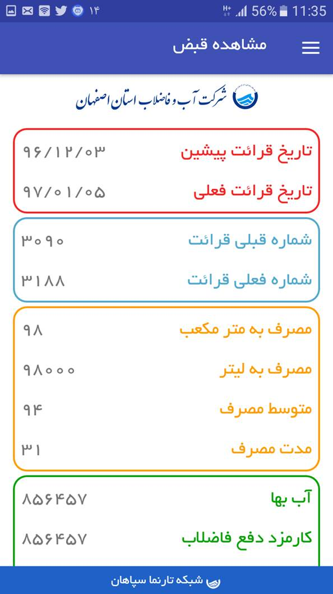
در بخش اعلام "اعلام کارکرد کنتور" ، شما می توانید شماره فعلی کنتور خود را وارد کنید و پس از
بررسی شماره وارد شده در صورتی که خارج از بازه میانگین طولانی مدت نباشد، اطلاعات قبض با شماره
وارد شده را مشاهده خواهید کرد.
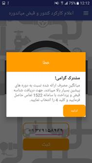
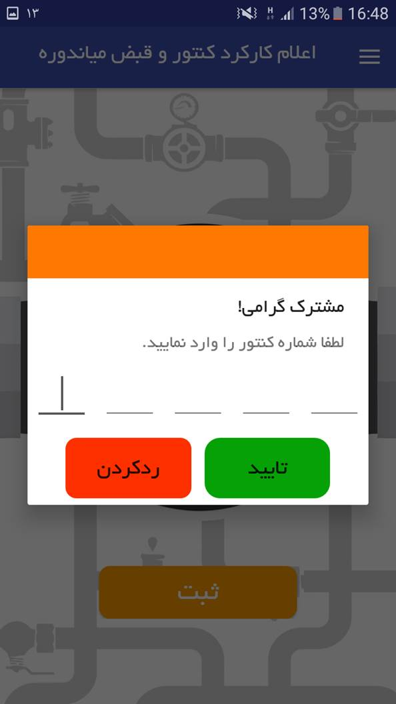
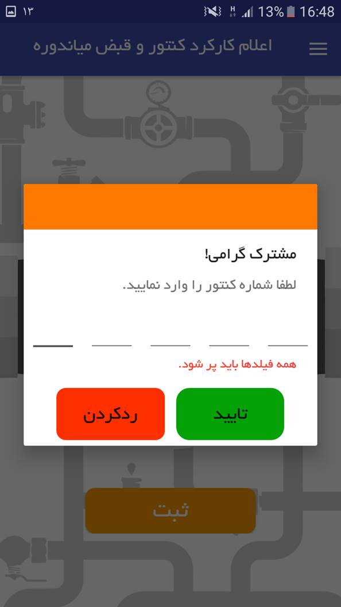
در قسمت "فروش انشعاب"، شما می توانید فرم درخواست اولیه خرید انشعاب جدید (آب یا آب و فاضلاب) را
پرکنید و کد پیگیری دریافت کنید.
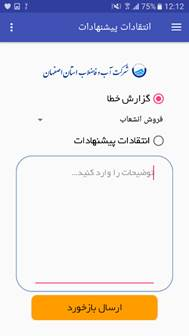
توجه شود ارزیابی صحت مقدار ورودی ملی، تلفن ثابت و کد پستی به صورت درون برنامه ای و شناسه همسایه
به صورت آنلاین انجام و نتیجه اعلام می شود.
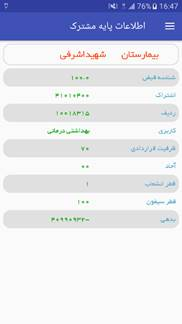
در قسمت "خدمات پس از فروش" ، کاربر می تواند بخشی از خدمات ارائه شده توسط شرکت را مشاهده و خدمت
یا خدمات مورد نیاز خود را انتخاب کند تا در اسرع وقت کارشناسان درخواست وی را بررسی
نمایند.
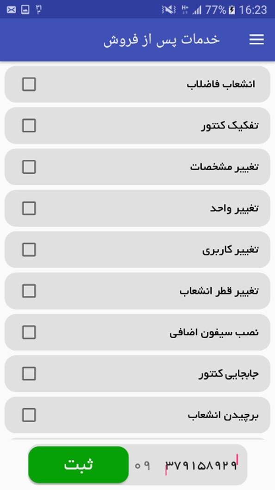
در قسمت "پیگیری درخواست ها" ، درصورتیکه قبلا درخواستی داشته اید با وارد کردن شماره پیگیری، می
توانید از وضعیت درخواست، مراحل درخواست و از طریق آیکون پیامک می توانید فهرست پیامک های ارسالی در
مرحله تعیین روز ارزیابی را مشاهده نمایید.
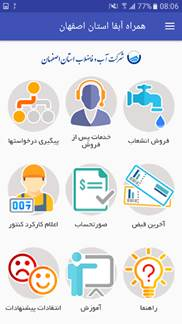
ضمنا صحت شماره پیگیری وارده به صورت آنلاین بررسی و در صورت نادرست بودن اعلام می گردد.
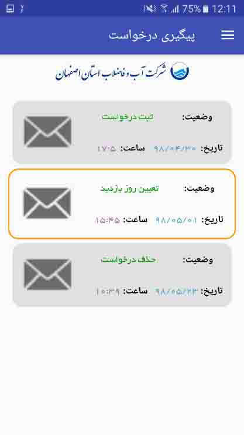
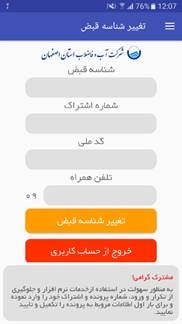
کارشناسان سازمان بخشی تحت عنوان "آموزش" را تعبیه کرده اند؛ در این قسمت توصیه های کاربردی و مهمی
جهت ایمنی و کاهش مصرف به مشترکین ارائه داده اند.
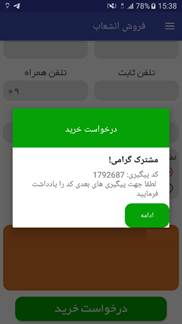
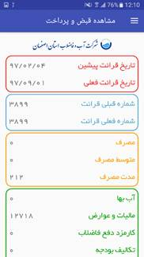
در صورتیکه کاربران نسبت به همراه آبفا، پیشنهاد یا انتقادی دارند یا درصورت مشاهده هرگونه خطا می
توانند کارشناسان سازمان را از طریق بخش "انتقادات و پیشنهادات" باخبر سازند.
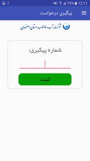
یا از طریق "ارتباط با پشتیبان"، راه های ارتباط با برنامه نویسان را مشاهده نمایند.